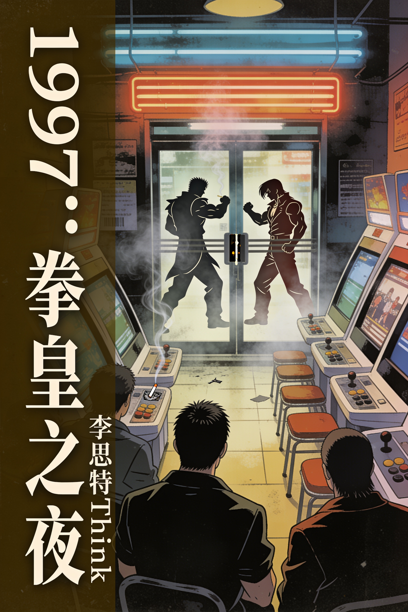

内容简介
本书是一部聚焦于1997年的场景叙事史，以一座虚构的南方小城街机厅为舞台，深入描绘了《拳皇97》风靡中国街头的时代切片。通过少年阿凯从入门到称霸的历程，以及老板娘账本所记录的微观经济浮沉，本书串联起下岗潮的社会背景、盗版游戏基板的灰色流通、街机厅内独特的江湖规矩与青春记忆。书中交织着可考的宏观史实与文学化的人物故事，力图还原那个烟雾缭绕、摇杆声噼啪作响的特定时空，为所有曾在街机厅度过青春岁月的读者，唤起一枚游戏币在玻璃台面上滚动时的共同回响。

本书是一部聚焦于1997年的场景叙事史，以一座虚构的南方小城街机厅为舞台，深入描绘了《拳皇97》风靡中国街头的时代切片。通过少年阿凯从入门到称霸的历程，以及老板娘账本所记录的微观经济浮沉，本书串联起下岗潮的社会背景、盗版游戏基板的灰色流通、街机厅内独特的江湖规矩与青春记忆。书中交织着可考的宏观史实与文学化的人物故事，力图还原那个烟雾缭绕、摇杆声噼啪作响的特定时空，为所有曾在街机厅度过青春岁月的读者，唤起一枚游戏币在玻璃台面上滚动时的共同回响。